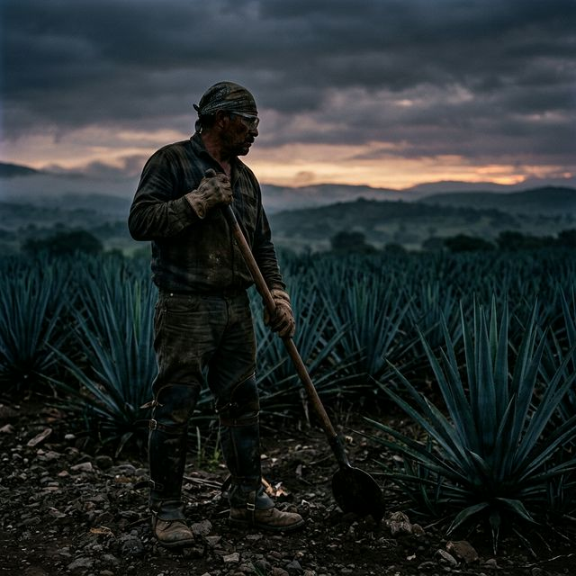
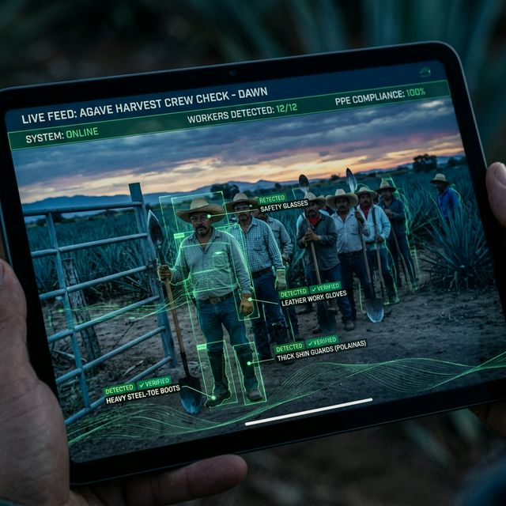
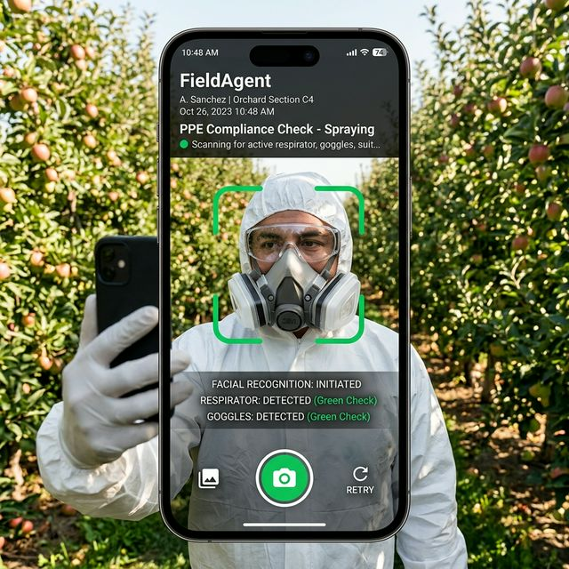
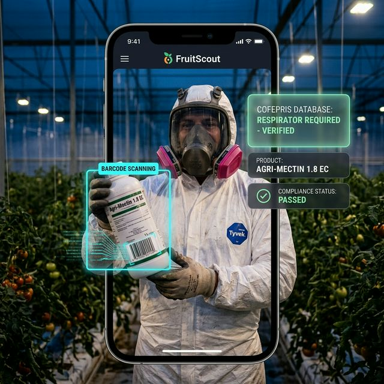
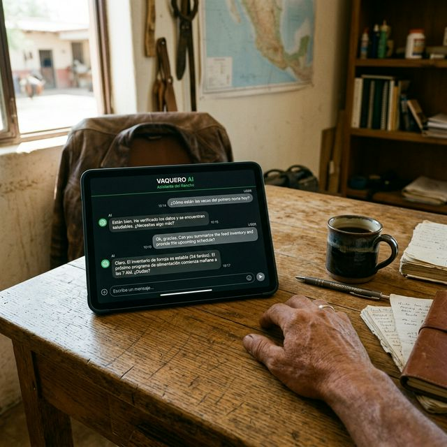

Cómo FarmAgent crea una cadena de custodia indestructible y auditable para el cumplimiento de EPP — protegiendo a los jimadores, satisfaciendo a los inspectores STPS y asegurando los contratos ESG de las destilerías.

Hoy: El Cabo supuestamente revisa a cada trabajador al bajar del camión. En la realidad, los trabajadores se quitan el equipo incómodo en cuanto el capataz se voltea. La documentación es una casilla en una tabla sucia.
FarmAgent: Antes de registrar su entrada al turno de cosecha, el Cabo graba un barrido de video de 10 segundos de la cuadrilla. FarmAgent verifica que cada trabajador traiga:

La verificación de EPP de FruitScout está desplegada y operando en múltiples cultivos. La imagen muestra la Verificación de EPP — Aplicación de FarmAgent en uso por un aplicador químico en un huerto de manzana.

Bloqueo de Seguridad en Aplicación Química
Monitoreo Autónomo Durante el Turno

Hoy: El gerente de rancho pasa 3 horas buscando en archiveros. Hojas de briefing de seguridad firmadas. Registros de revisiones diarias. Esperando que nada falte.
Auditoría Sin Estrés FarmAgent
| Herramienta | Lo Que Recibe el Inspector |
|---|---|
| Dashboard de Cumplimiento en Vivo | En tiempo real: 14 cuadrillas activas, 100% EPP verificado, 2 aspersores equipados — en este momento |
| Reporte STPS Automatizado | PDF legalmente defensible: cada verificación de video diaria cruzada con la lista de trabajadores, probando cumplimiento NOM-017-STPS |
| Exportación ESG para Destilería | Enlace de solo lectura para auditor de Patrón, Herradura o Cuervo — prueba completa de abastecimiento ético, al instante |

No puedes permitirte un incidente de seguridad. No puedes darte el lujo de perder tu contrato con la destilería por un audit ESG fallido.
FarmAgent hace que el cumplimiento de seguridad sea automático, invisible y permanentemente comprobable — antes de que una sola coa toque una piña.